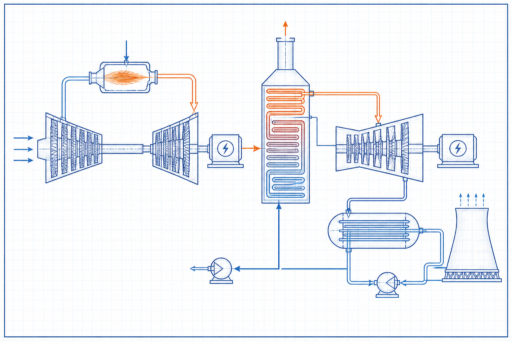

Thermal and combustion engineering guide
Heat-Recovery Steam Generators: Components and Operating Principles
Heat-Recovery Steam Generators: Components and Operating Principles is a focused thermal and combustion engineering guide within the Industrial Calculation Hub knowledge library. It explains the engineering purpose, physical basis, governing inputs, process or equipment interfaces, common failure mechanisms and the limits of preliminary use.

- Content type
- Thermal and combustion engineering guide
- Canonical ID
- ICH-CAN-032
- Source basis
- Mechanical-engineering and gas-turbine literature
- Last reviewed
- 31 August 2026
What is Heat-Recovery Steam Generators: Components and Operating Principles?
A heat-recovery steam generator, or HRSG, recovers gas-turbine exhaust heat to produce steam for a steam turbine, process users or both. It contains economiser, evaporator, superheater, drums, ducting, bypass arrangements, attemperation, drains, safety valves and controls arranged to meet steam conditions without damaging tube circuits.
Heat transfers from hot exhaust gas through tube banks to feedwater and steam circuits. Pinch point, approach temperature, gas-side pressure loss, steam pressure, circulation, tube metal temperature and exhaust-temperature profile define the design. Start-up is often more demanding than steady load because thermal gradients, drum level swell/shrink and attemperator control must be managed.
Why the whole operating system matters
Heat-Recovery Steam Generators: Components and Operating Principles should be assessed across its full thermal, fluid or process boundary. A nominal nameplate duty rarely captures fouling, leakage, cycling, changing fuel or feed, temperature gradients and control interactions. The engineering objective is stable, safe and verifiable performance over the credible operating range.
Terms and reference conditions
- Design condition
- The specified flow, pressure, temperature, composition and equipment line-up used for sizing.
- Operating envelope
- The range of startup, normal, turndown, fouled and upset conditions that equipment must tolerate.
- Performance evidence
- Traceable measurements and inspection records that show the system operates as intended.
Working principle and governing relationships
Heat transfers from hot exhaust gas through tube banks to feedwater and steam circuits. Pinch point, approach temperature, gas-side pressure loss, steam pressure, circulation, tube metal temperature and exhaust-temperature profile define the design. Start-up is often more demanding than steady load because thermal gradients, drum level swell/shrink and attemperator control must be managed.
Operating relationship 1
gas-turbine exhaust flow and temperature set the available heat source. Use values from the same mass, energy and pressure basis before drawing a conclusion.
Operating relationship 2
pinch and approach temperatures influence heat-transfer surface and steam generation. Use values from the same mass, energy and pressure basis before drawing a conclusion.
Operating relationship 3
gas-side pressure drop creates gas-turbine backpressure and affects output. Use values from the same mass, energy and pressure basis before drawing a conclusion.
Operating relationship 4
drum pressure, feedwater temperature and circulation determine evaporator behaviour. Use values from the same mass, energy and pressure basis before drawing a conclusion.
State the mass, energy and pressure basis used for each relationship. Differences between dry and wet gas, actual and normal volume, lower and higher heating value, or one pressure reference and another can produce misleading apparent performance changes.
Operating cases that should be compared
Operating case 1. gas-turbine exhaust flow and temperature set the available heat source. Compare normal operation with the condition most likely to upset this relationship: start-up, turndown, peak production, fouling, temperature change, new feed or fuel, and maintenance line-up. State which instrument or inspection confirms that the system remains within its safe and useful range.
Operating case 2. pinch and approach temperatures influence heat-transfer surface and steam generation. Compare normal operation with the condition most likely to upset this relationship: start-up, turndown, peak production, fouling, temperature change, new feed or fuel, and maintenance line-up. State which instrument or inspection confirms that the system remains within its safe and useful range.
Operating case 3. gas-side pressure drop creates gas-turbine backpressure and affects output. Compare normal operation with the condition most likely to upset this relationship: start-up, turndown, peak production, fouling, temperature change, new feed or fuel, and maintenance line-up. State which instrument or inspection confirms that the system remains within its safe and useful range.
Operating case 4. drum pressure, feedwater temperature and circulation determine evaporator behaviour. Compare normal operation with the condition most likely to upset this relationship: start-up, turndown, peak production, fouling, temperature change, new feed or fuel, and maintenance line-up. State which instrument or inspection confirms that the system remains within its safe and useful range.
Data needed for a defensible review
- gas-turbine exhaust conditions and permitted backpressure
- steam pressure, temperature, flow, feedwater quality and attemperator limits
- tube-bank differential pressure, metal temperature, drum level and blowdown
- bypass damper position, duct expansion, drains and startup sequence
- water chemistry, lay-up condition and previous tube leak or thermal-fatigue evidence
Record 1. gas-turbine exhaust conditions and permitted backpressure. Confirm how and when this information was measured, because a transient plant condition can make a correct instrument value unsuitable for the intended calculation.
Record 2. steam pressure, temperature, flow, feedwater quality and attemperator limits. Confirm how and when this information was measured, because a transient plant condition can make a correct instrument value unsuitable for the intended calculation.
Record 3. tube-bank differential pressure, metal temperature, drum level and blowdown. Confirm how and when this information was measured, because a transient plant condition can make a correct instrument value unsuitable for the intended calculation.
Record 4. bypass damper position, duct expansion, drains and startup sequence. Confirm how and when this information was measured, because a transient plant condition can make a correct instrument value unsuitable for the intended calculation.
Record 5. water chemistry, lay-up condition and previous tube leak or thermal-fatigue evidence. Confirm how and when this information was measured, because a transient plant condition can make a correct instrument value unsuitable for the intended calculation.
Practical review and operating method
- Step 1. establish a controlled warm-up and drain strategy before admitting hot gas
- Step 2. maintain feedwater chemistry and deaeration within the water-steam specification
- Step 3. trend terminal temperature differences and pressure loss for fouling or bypass
- Step 4. coordinate gas-turbine load changes with attemperation and steam-system acceptance
- Step 5. inspect expansion joints, supports and drains for thermal movement and condensate accumulation
Repeat measurements at the operating condition that most challenges the system. Preserve the line-up, calibration state, instrument position and relevant equipment condition so later data can distinguish real improvement from changed measurement conditions.
Controls, commissioning and operating discipline
Control 1. establish a controlled warm-up and drain strategy before admitting hot gas. Assign an owner, evidence source and review trigger. This turns the engineering recommendation into a maintained operating requirement rather than an isolated commissioning note.
Control 2. maintain feedwater chemistry and deaeration within the water-steam specification. Assign an owner, evidence source and review trigger. This turns the engineering recommendation into a maintained operating requirement rather than an isolated commissioning note.
Control 3. trend terminal temperature differences and pressure loss for fouling or bypass. Assign an owner, evidence source and review trigger. This turns the engineering recommendation into a maintained operating requirement rather than an isolated commissioning note.
Control 4. coordinate gas-turbine load changes with attemperation and steam-system acceptance. Assign an owner, evidence source and review trigger. This turns the engineering recommendation into a maintained operating requirement rather than an isolated commissioning note.
Control 5. inspect expansion joints, supports and drains for thermal movement and condensate accumulation. Assign an owner, evidence source and review trigger. This turns the engineering recommendation into a maintained operating requirement rather than an isolated commissioning note.
Example engineering case
An HRSG with unstable superheat temperature during fast turbine ramps may require review of exhaust distribution, attemperator spray quality, sensor placement, feedwater response and steam-user transients. A control retune alone may not solve maldistribution or drain issues.
The useful result is not merely an explanation of the observed symptom. It is a documented cause-and-effect chain that identifies the controlling mechanism, the measurement needed to confirm it and the operating or design change that can be verified after implementation.
Typical applications
Heat-Recovery Steam Generators: Components and Operating Principles is used in combined-cycle power plants, cogeneration, refinery process steam and gas-turbine heat-recovery systems. Site conditions, fuel or material composition, emissions requirements, water quality, operating hours, maintenance access and safety duty must be evaluated for each installation.
Failure modes and early warning signs
- rapid heating can create damaging tube and drum thermal gradients
- poor drainage allows water induction or thermal shock
- excess gas-side loss reduces gas-turbine output
- out-of-specification water chemistry can cause deposits, corrosion or tube failure
Warning 1
rapid heating can create damaging tube and drum thermal gradients. Investigate the physical cause before changing a control setpoint, fan speed, fuel rate or equipment item.
Warning 2
poor drainage allows water induction or thermal shock. Investigate the physical cause before changing a control setpoint, fan speed, fuel rate or equipment item.
Warning 3
excess gas-side loss reduces gas-turbine output. Investigate the physical cause before changing a control setpoint, fan speed, fuel rate or equipment item.
Warning 4
out-of-specification water chemistry can cause deposits, corrosion or tube failure. Investigate the physical cause before changing a control setpoint, fan speed, fuel rate or equipment item.
Trend the variable closest to the governing mechanism: temperature difference, pressure loss, oxygen, flow, composition, vibration, shell temperature, conductivity or emission concentration. One alarm alone rarely identifies the cause.
Maintenance, safety and management of change
Before intervention, control stored pressure, high temperature, rotating equipment, steam, chemical, electrical, confined-space and hot-work hazards. A modification to fuel, material, water chemistry, ducting, nozzles, fan, refractory, control logic or setpoint can change the basis of performance. Update the operating procedure, drawings, test results and training material together.
Acceptance and reassessment
At release, confirm the measured duty against the specified operating envelope and the relevant protection limits. Record the deviation, uncertainty and mitigation if a design assumption remains unverified.
Reassessment item 1. gas-turbine exhaust flow and temperature set the available heat source. Define the operating change—such as fouling, new fuel, added production, seasonal temperature or equipment repair—that should trigger a repeat check.
Reassessment item 2. pinch and approach temperatures influence heat-transfer surface and steam generation. Define the operating change—such as fouling, new fuel, added production, seasonal temperature or equipment repair—that should trigger a repeat check.
Reassessment item 3. gas-side pressure drop creates gas-turbine backpressure and affects output. Define the operating change—such as fouling, new fuel, added production, seasonal temperature or equipment repair—that should trigger a repeat check.
Reassessment item 4. drum pressure, feedwater temperature and circulation determine evaporator behaviour. Define the operating change—such as fouling, new fuel, added production, seasonal temperature or equipment repair—that should trigger a repeat check.
Frequently Asked Questions
Can an HRSG be treated like a conventional boiler?
Both generate steam, but an HRSG is driven by a changing exhaust-gas source and has different start-up, gas-path and control interactions.
What should be confirmed first?
Start with a common, measured operating basis for flow, temperature, pressure and composition, then trace the system boundary to find the controlling resistance, heat duty or process limitation.
Can a typical value be used for final design?
No. Values must be confirmed for the actual equipment, material, operating range, protections and applicable requirements before final approval.
References
- Mechanical Engineering Handbook. Supplied source library.
- Guideline for Gas Turbine Inlet Air Filtration Systems. Supplied source library.
Original educational summary informed by the supplied literature. It does not reproduce protected source text, figures, tables or standards material.